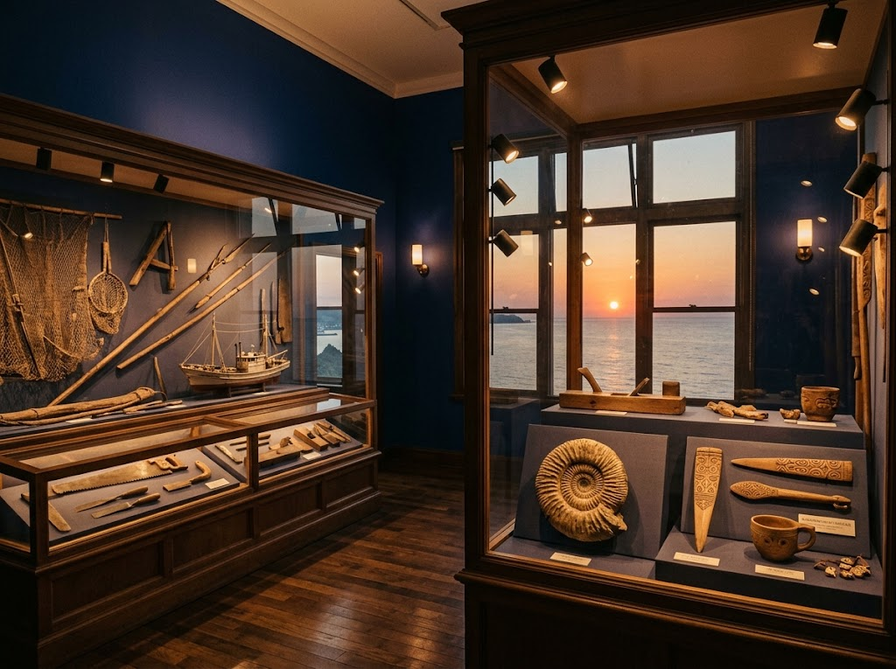
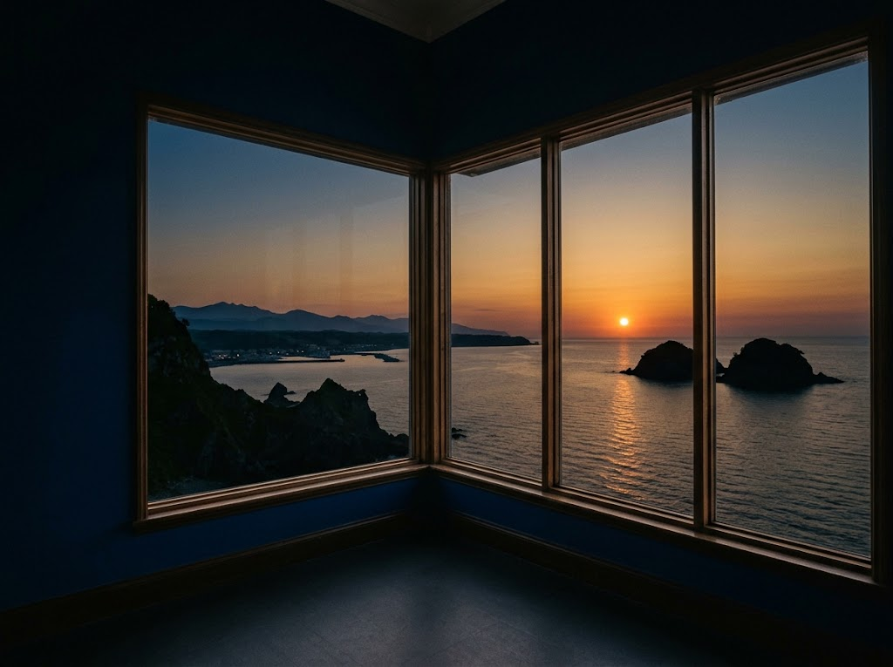

留萌市海のふるさと館は、地域の歴史や文化資源を保存・展示することを目的に、留萌市が主体となって1989年に開設しました。

ニシン漁の道具や古代の化石、アイヌ文化資料など、留萌ならではの貴重な資料を所蔵しています。
操縦シミュレーター「るもい号」をはじめ、体験型の展示も充実しています。
黄金岬の高台に位置し、日本海や留萌港、南に暑寒別連峰、北に天売・焼尻島を一望できる景勝地にあります。展望ラウンジ・テラスからの眺めは、この館いちばんの見どころです。

★★★★★留萌市大町の黄金岬にある資料館。
留萌の歴史を地球誕生から先史時代などから学べます。珍しい物だと発掘された平安時代の鎧兜が展示されています。蝦夷まで落ち延びた武士が持っていたもの、アイヌが交易で手に入れたものなど言われており歴史のロマンが伝わる遺産です。留萌ではアンモナイトなどの化石が発掘されていることも初めて知りました。そして留萌といえばやはりニシン漁。全盛期に使われていた猟具や漁船を作るための船大工道具など留萌発展の歴史を垣間見れます。「ゴールデンカムイ」で辺見ちゃんが使っていた玉切り包丁もありました。子供が楽しめる体験コーナーも色々あります。留萌港を船でまわるるもい号シミュレーターを遊びましたが難しすぎてクリア出来る気がしません（笑）
以前はレストランも営業していましたが現在は閉業中。至る所で老朽化が目立ちますが無料で見られるのは助かりますし地元の方が地元の歴史を学ぶ場所としても残していってほしいです。日本海に沈む夕陽が見られる展望フロアやメッセージノートもあり観光としても楽しめます。
★★★★★黄金岬の上（高台にある施設）。黄金岬から遊歩道を登ること2分程度で行ける。黄金岬から車でも上がれる道がすぐ近くにある。
黄金岬より少しだけ高い目線で綺麗な夕陽が見られる場所。無料で停められる駐車場もあり、車の中から夕陽を眺めることもできる夕方の絶景ポイント。
| 施設名 | 留萌市海のふるさと館 |
|---|---|
| 住所 | 北海道留萌市大町2丁目3-1 |
| 電話番号 | 0164-43-6677 |
| 定休日 | 月曜日 |
| 公式サイト | https://www.rumoi-rasisa.jp/web/rumoimeguri/umino-furusatokan/ |
| お問い合わせ | お問い合わせフォーム |